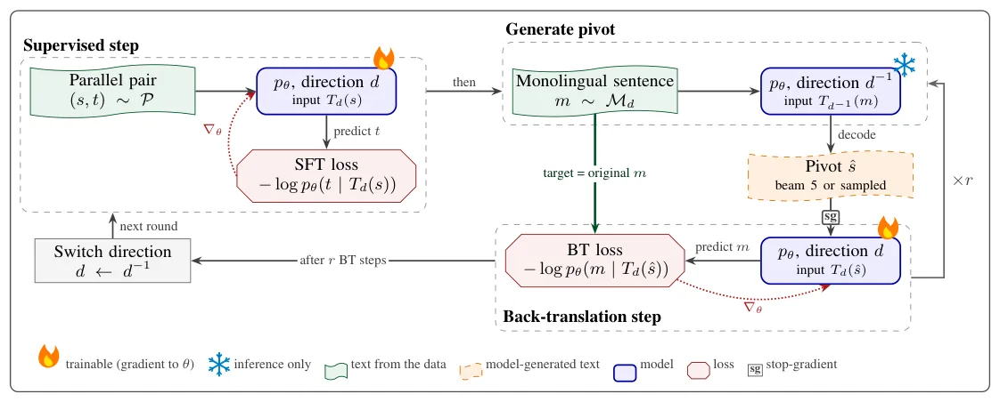
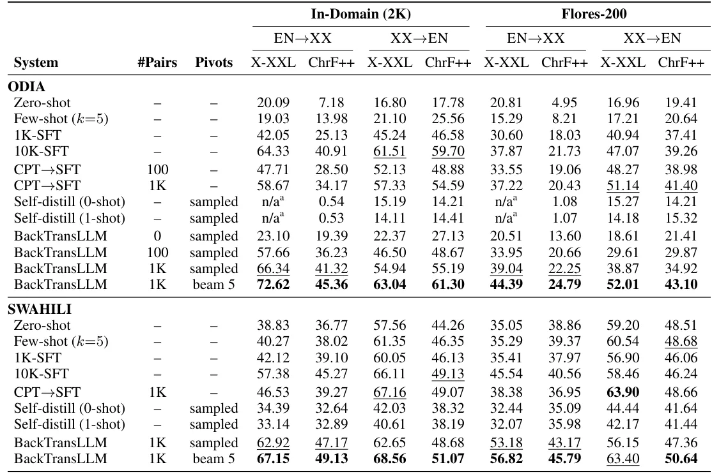
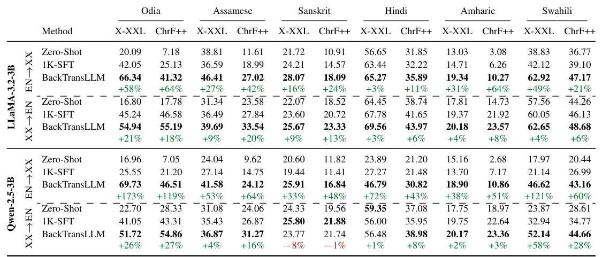

O problema da escassez de dados paralelos
Os Large Language Models (LLMs) modernos demonstraram capacidades notáveis em tarefas de tradução entre idiomas de alta disponibilidade, como inglês e espanhol. No entanto, a maioria dos modelos de código aberto é treinada predominantemente em um conjunto limitado de idiomas ricos em dados, deixando centenas de línguas com competência fraca ou praticamente nula. O gargalo principal não é apenas a falta de dados monolíngues, mas a escassez extrema de corpus paralelos (pares de frases traduzidas). Para muitas línguas de baixa disponibilidade, esses pares são duas a três ordens de magnitude menores do que os usados para idiomas principais, e muitas vezes estão confinados a domínios muito específicos.
Diante dessa escassez, a abordagem padrão para adaptar um LLM a um idioma de baixa disponibilidade envolve duas estratégias: few-shot prompting (in-context learning) ou supervised fine-tuning (SFT) em um pequeno conjunto de dados paralelos. O few-shot prompting depende criticamente da capacidade do modelo de já conhecer o idioma alvo para gerar exemplos relevantes. O SFT, por sua vez, ajusta os pesos do modelo para a tarefa de tradução. Ambos os métodos dependem do que o modelo já aprendeu durante o pré-treinamento. Mas e se tivermos acesso a uma quantidade moderada de texto monolíngue no idioma alvo? Como utilizar esses dados para melhorar a tradução sem depender exclusivamente dos poucos pares paralelos disponíveis?
Receitas existentes: Continued Pretraining e Self-Distillation
Dois caminhos principais surgiram na literatura recente para incorporar dados monolíngues em LLMs. O primeiro é o Continued Pretraining (CPT), seguido de SFT. Trabalhos como ALMA e LLaMAX aplicam CPT em modelos de 7B ou 13B parâmetros, alimentando-os com bilhões de tokens monolíngues antes de realizar o fine-tuning supervisionado. A lógica aqui é que o CPT otimiza o objetivo genérico de modelagem de linguagem, preparando o modelo para o idioma, enquanto o mapeamento cross-lingual é aprendido apenas durante o SFT. No entanto, quando o volume de dados monolíngues é limitado (alguns milhões de tokens), não está claro se o CPT ainda oferece retorno significativo sobre o investimento computacional.
O segundo caminho é a Self-Distillation, exemplificada por métodos como CycleDistill. Nesse processo, o modelo traduz textos monolíngues usando prompts de zero-shot ou few-shot, e então realiza fine-tuning sobre suas próprias traduções geradas. O ciclo se repete, refinando o modelo. O problema fundamental dessa abordagem é que os alvos de treinamento são gerados pelo próprio modelo. Se o modelo base tem uma prioridade fraca sobre o idioma (ou seja, não o conhece bem), ele tende a propagar e amplificar seus próprios erros durante o treinamento. Os autores relatam que a self-distillation frequentemente não traz ganhos se o modelo base for fraco no idioma alvo.
A proposta: Back-Translation para LLMs
Antes da era dos LLMs, o texto monolíngue era utilizado principalmente através do Back-Translation (BT), uma técnica clássica de tradução automática. No BT tradicional, um modelo treinado na direção reversa traduz sentenças monolíngues do idioma alvo para o idioma fonte. O resultado é um par sintético onde a fonte é gerada pelo modelo, mas o alvo é uma frase humana real. Isso é crucial: o texto humano permanece no lado do alvo, e os erros do modelo entram apenas como entrada (ruído), não como alvo de aprendizado. Isso contrasta diretamente com a self-distillation, onde o modelo treina para reproduzir suas próprias saídas.
Os autores questionam se essa propriedade protetora do BT ainda importa para LLMs pré-treinados e instruídos. Para testar essa hipótese, eles propõem o BackTransLLM, uma adaptação do BT para o regime de fine-tuning de LLMs. A ideia central é usar o texto monolíngue para gerar pares de treinamento sintéticos de alta qualidade, mantendo a integridade do texto humano no alvo, e intercalar esses dados com o conjunto paralelo real durante o treinamento para garantir estabilidade.

Como funciona o BackTransLLM
O método BackTransLLM opera em ciclos de treinamento que alternam entre aprendizado supervisionado e aprendizado a partir de dados sintéticos. Inicialmente, o modelo é ajustado (fine-tuned) em um conjunto paralelo de frases (por exemplo, 1.000 pares de inglês para o idioma alvo). Em seguida, o modelo é usado para traduzir sentenças monolíngues do idioma alvo de volta para o inglês (ou idioma fonte). Essa tradução reversa gera pares sintéticos: a saída do modelo serve como fonte, e a entrada original (humana) serve como alvo.
Um detalhe técnico importante é o uso de 'stop-gradient' durante o treinamento com os dados sintéticos. Isso significa que os gradientes não fluem através do processo de geração do pivot sintético, mas sim apenas até a reconstrução do alvo original. Isso impede que o modelo seja penalizado por erros na geração do pivot, focando apenas em aprender a mapear o pivot sintético de volta para o texto humano correto. Além disso, o treinamento intercala passos com o conjunto paralelo real e passos com os dados back-translated, o que ajuda a estabilizar o aprendizado e evita o colapso do modelo.
Configuração Experimental e Baselines
Os autores avaliaram o método em cinco idiomas de baixa disponibilidade (Odia, Swahili, Sanskrit, entre outros) e um idioma de alta disponibilidade (Hindi) como controle. Os modelos base utilizados foram LLaMA-3.2-3B-Instruct e Qwen-2.5-3B-Instruct, ambos com 3 bilhões de parâmetros. O conjunto de dados paralelos foi mantido pequeno, com apenas 1.000 pares para a maioria dos experimentos, e 10.000 pares para algumas comparações. O texto monolíngue disponível foi de 40.000 sentenças por idioma.
As baselines contra as quais o BackTransLLM foi comparado incluem: 1) Zero-shot (sem treinamento adicional), 2) 1K-SFT (fine-tuning supervisionado apenas com 1.000 pares paralelos), 3) 10K-SFT (fine-tuning com 10.000 pares paralelos), 4) Continued Pretraining (CPT) seguido de SFT, e 5) Self-Distillation. As métricas de avaliação incluíram XCOMET-XXL, ChrF++, e outras métricas automáticas de qualidade de tradução. Além disso, foi realizada uma avaliação humana cega para Odia e Sanskrit.

Resultados: Back-Translation vence
Os resultados foram consistentes e favoráveis ao BackTransLLM. Com apenas 1.000 pares paralelos e 40.000 sentenças monolíngues, o BackTransLLM superou o continued pretraining em 7,7 a 16,4 pontos XCOMET-XXL em domínios específicos para Odia e Swahili. Mais impressionante ainda, o BackTransLLM com 1K de pares paralelos superou o modelo SFT treinado com 10K pares paralelos (dez vezes mais dados). Isso sugere que a qualidade da formação dos pares sintéticos via back-translation é mais valiosa do que a quantidade bruta de dados paralelos.
Ao comparar com a self-distillation, o BackTransLLM também venceu claramente. A auto-distilação falhou em gerar ganhos significativos quando o modelo base tinha uma prioridade fraca, confirmando a hipótese de que treinar o modelo em suas próprias saídas é prejudicial nesse regime. O BackTransLLM, ao manter o texto humano no alvo, evitou esse problema. Para o LLaMA-3.2-3B, o BackTransLLM melhorou as métricas em até 64% em relação ao 1K-SFT para tradução EN→XX. Para o Qwen-2.5-3B, os ganhos foram ainda maiores, chegando a 173% em algumas métricas.

Análise de Ablação e Escalabilidade
Os autores realizaram análises de ablação para entender os fatores que contribuem para o sucesso do método. Um fator chave foi o uso de pivots decodificados com beam search. Em vez de usar amostragem simples, o beam search gera traduções reversas mais coerentes e gramaticalmente corretas, que servem como melhores fontes sintéticas para o treinamento. A qualidade desses pivots impacta diretamente a qualidade do par back-translated.
Outra análise explorou a quantidade de dados monolíngues. Como mostrado na Figura 2 (não exibida aqui, mas descrita no texto), o desempenho do modelo melhora conforme o tamanho do corpus monolíngue aumenta, indicando que há mais dados disponíveis para gerar pares sintéticos de qualidade. No entanto, o retorno marginal diminui após certo ponto, sugerindo que a qualidade dos dados e a estratégia de amostragem são tão importantes quanto a quantidade absoluta.
Avaliação Humana e Consistência
Para validar as métricas automáticas, os autores conduziram uma avaliação humana cega com três anotadores independentes para Odia e Sanskrit. Os anotadores compararam as traduções geradas por 1K-SFT, 10K-SFT e BackTransLLM. Os resultados humanos confirmaram as métricas automáticas: o BackTransLLM foi classificado como o melhor em ambos os idiomas, seguido pelo 10K-SFT e, por último, o 1K-SFT. Isso reforça a validade do método e sua aplicabilidade prática, mesmo para idiomas com estruturas linguísticas complexas ou escritas não latinas.
Conclusões e Recomendações Práticas
O paper conclui que, para LLMs com prioridade fraca em idiomas de baixa disponibilidade, o back-translation continua sendo uma técnica superior ao continued pretraining e à self-distillation para aproveitar dados monolíngues. A chave é manter o texto humano no alvo do treinamento, evitando a propagação de erros do modelo. Os autores recomendam o uso de pivots decodificados com beam search e a seleção cuidadosa de dados monolíngues de alta qualidade, mesmo que o domínio não seja perfeitamente alinhado.
Implicações para Desenvolvedores
Para cientistas de dados e engenheiros de ML trabalhando com idiomas negligenciados, este paper oferece uma receita prática: não descarte o back-translation. Mesmo com LLMs poderosos, se você tem poucos pares paralelos e algum texto monolíngue, gerar pares sintéticos via back-translation e intercalá-los com o fine-tuning supervisionado pode ser a estratégia mais eficiente. Isso é particularmente relevante em cenários de baixo recurso, onde o custo de coleta de dados paralelos é proibitivo, mas o texto monolíngue é mais acessível.
Trabalhos Futuros
Os autores apontam que trabalhos futuros devem expandir o estudo para mais idiomas e backbones, além de explorar pares de idiomas que não envolvem o inglês como pivô. Também é interessante investigar se técnicas de amostragem de dados monolíngues podem ser otimizadas ainda mais para maximizar a utilidade dos pares sintéticos gerados.
O que fica
- Back-Translation supera Continued Pretraining e Self-Distillation para LLMs de baixa disponibilidade.
- Com 1K pares paralelos, BackTransLLM supera SFT com 10K pares, valorizando qualidade sobre quantidade.
- Manter texto humano no alvo evita propagação de erros, crucial quando o modelo base é fraco.
- Beam search nos pivots sintéticos melhora significativamente a qualidade do treinamento.
Paper original: Back-Translation Still Matters: Leveraging Monolingual Data for Low-Resource Machine Translation with LLMs
Comentários
Nenhum comentário ainda. Seja o primeiro.